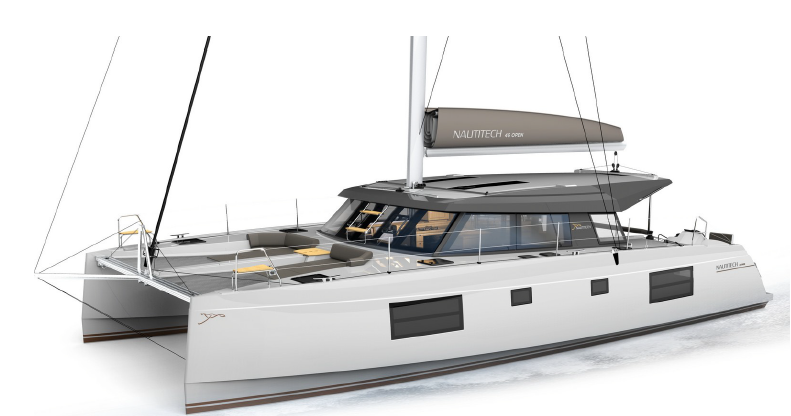
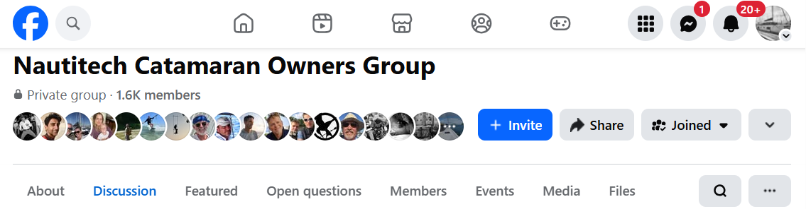

About the Nautitech 46 Open
Nautitech released the 46 Open model in 2016 and updated the design in 2019. The biggest giveaways between the first and second generation are the larger stateroom side windows (the first generation had two smaller windows) and the galley, which was originally forward-facing on the port side of the saloon in the first generation, versus the second generation's aft, starboard-side layout. A number of smaller functional and aesthetic design changes were also made. Nautitech produced 188 46 Opens, and Courage is hull #185.

Nautitech 46 Open — manufacturer rendering
Nautitech Documents
The following documents were originally on the Nautitech website or provided to us as part of the purchase. Unfortunately, Nautitech has updated its entire lineup and no longer appears to have information on the N46 Open publicly available. Beyond the basic boat info here, we have digital copies of almost every system and part of the boat, plus more extensive documentation — wiring diagrams, the rig tuning guide, and more — available upon request.
Sales Brochure Technical Spec User Manual Sailing Polars Sailing Polars (table)Facebook Nautitech Catamaran Owners

By far the best source of information is the Nautitech FB Owner's Group. We've been part of this community for almost five years now, since we put our deposit down on the boat, and have made numerous friends through it. Any time we've had a problem or question, it's been a great source of info — from deciding which factory options to buy, to repairs in remote places, this group has always come through. I've been a strong contributor to the group as well, so there are numerous posts in there that speak to all aspects of Courage.
Reviews
There are a lot of reviews of the Nautitech 46 Open online — write-ups, videos, and more — but the following series, published by Sailing While One, is of a second-generation Nautitech 46 Open and is fairly current compared to most of what's out there.